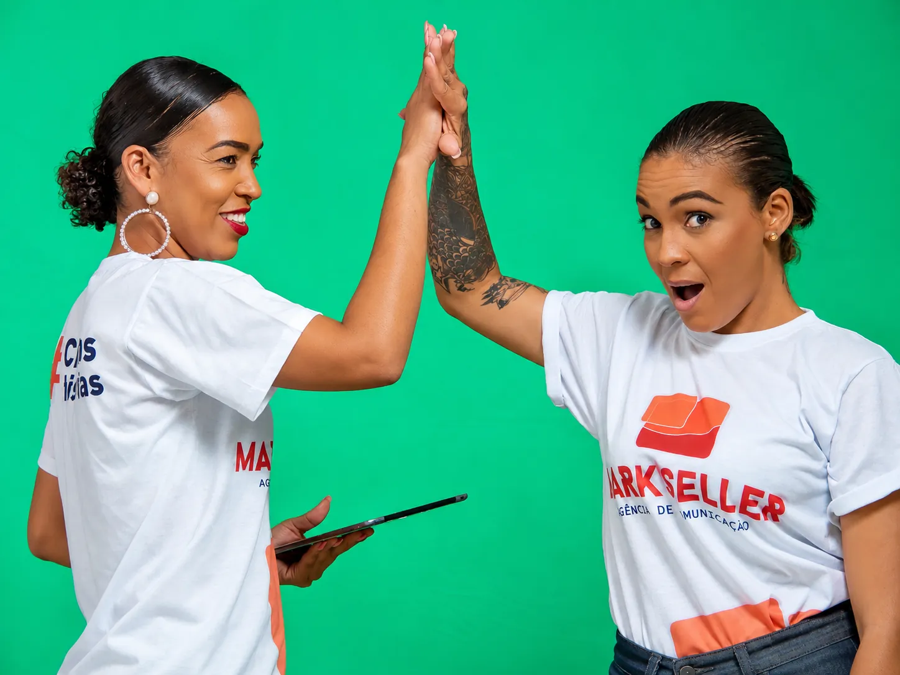

Missão
Fazer com que cada cliente seja reconhecido como autoridade no seu segmento, agregando valor ao negócio, potenciando operações e fortalecendo a relação com o público através de conteúdo relevante, comunicação estratégica e imagem consistente.
A Mark Seller actua em marketing, publicidade, comunicação e imagem, combinando estratégia, criatividade e execução para transformar marcas em referências no seu mercado.
A Mark Seller ajuda empresas, marcas e projectos a construírem presença, credibilidade e impacto através de uma comunicação visual e estratégica pensada para resultados reais. Mais do que criar peças bonitas, desenhamos mensagens, narrativas e activos que fortalecem a percepção de valor da marca.
Este portfólio foi actualizado para tornar os trabalhos mais visíveis, melhorar a experiência de navegação e dar mais destaque à diversidade de clientes já atendidos.
Agora apresentados de forma mais interactiva, permitindo explorar cada pilar com mais clareza e envolvimento.
Fazer com que cada cliente seja reconhecido como autoridade no seu segmento, agregando valor ao negócio, potenciando operações e fortalecendo a relação com o público através de conteúdo relevante, comunicação estratégica e imagem consistente.
Ser uma referência angolana em marketing, publicidade, comunicação e imagem, reconhecida pela capacidade de transformar marcas em activos estratégicos, culturalmente relevantes e comercialmente fortes.
Compromisso com a excelência, criatividade com propósito, foco em resultados, ética profissional, proximidade com o cliente, capacidade de adaptação e uma cultura de melhoria contínua em tudo o que criamos.
Os pilares podem ser alternados por clique, tornando a apresentação mais dinâmica durante reuniões, propostas e exibições comerciais.
Cada bloco destaca uma única ideia principal, ajudando o visitante a compreender rapidamente a essência da marca.
A linguagem visual mantém coerência com o restante portfólio, reforçando sofisticação e unidade institucional.
Da definição estratégica à execução visual, cobrimos as áreas fundamentais para posicionar e expandir marcas com consistência.
Logótipo, paleta, tipografia e manual de marca que dão rosto e coerência ao seu negócio.
Planeamento e criação de posts, carrosséis e stories que mantêm a marca activa e relevante.
Ideias fortes e peças integradas para lançar produtos, vender mais e reforçar a imagem.
Decks, propostas e portfólios com design cuidado para apresentar a empresa com confiança.
Outdoors, lonas, painéis e adaptações para todos os formatos e suportes.
Mensagens, tom de voz e planos de comunicação alinhados com os objectivos do negócio.
Flyers, catálogos, brindes e peças de ponto de venda prontos para produção.
Direcção criativa para que a marca se destaque e seja lembrada no seu mercado.
Unimos estratégia, criação e mídia para aproximar marcas dos seus clientes. O processo parte do comportamento e do contexto do consumidor, cruza cultura e plataformas digitais e transforma uma grande ideia em comunicação relevante e orientada para resultados.
A colaboração entre áreas reduz silos e permite mais agilidade, frequência e consistência — sem perder a direcção estratégica.

A imagem do parceiro foi substituída por uma versão com melhor qualidade para uma apresentação mais limpa e profissional.
Parceiro institucional apresentado na versão da apresentação corporativa da Mark Seller, agora com imagem em melhor definição para reforçar credibilidade e qualidade visual.
Criar o próximo projecto ↘Marketing, publicidade, comunicação e imagem com uma abordagem criativa, estratégica e orientada para resultados.